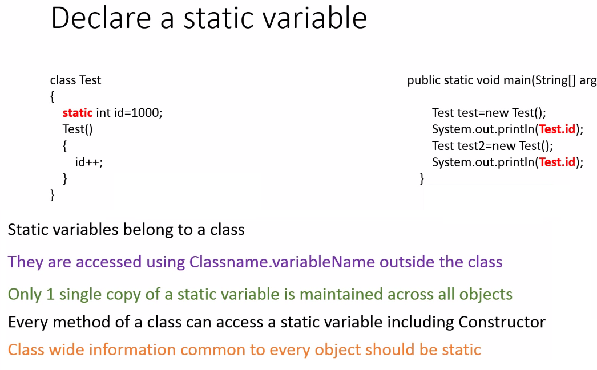

Static members
- We can use or acces all static members, methods of class without creating the object.
- All static members , methods will shared to all created instances means all created object of class.
- We can not call non static methods from static method.
- Static methods can not refer using this or super keyword.
static Keyword In Java
The static keyword in java is used for memory management mainly. We can apply java static keyword with variables, methods, blocks and nested class. The static keyword belongs to the class than instance of the class. Final can be:
The static can be:
- variable (also known as class variable)
- method (also known as class method)
- block
- nested class
Java static variable
If you declare any variable as static, it is known static variable.
- The static variable can be used to create common properties in class, and we can acces it without creating a class object
- The static variable gets memory only once in class area at the time of class loading.
Java static method
If you apply static keyword with any method, it is known as static method.
- A static method belongs to the class rather than object of a class.
- A static method can be invoked without the need for creating an instance of a class.
- static method can access static data member and can change the value of it.
Restrictions for static method
There are two main restrictions for the static method. They are:
- The static method can not use non static data member or call non-static method directly.
- this and super cannot be used in static context.
Java static block
- Is used to initialize the static data member.
It is executed before main method at the time of classloading.
-

Example : -
package edu.java.basic;
class Student {
int rollno;
String name;
String schoolName;
// creating static variables
static int count = 0; // will get memory only once and retain its value
static String COLLEGE = "JAVA COLLEGE";
// Static Block
/*
* Note : - whenever you create the object and initialize it 1. before
* creating object and initialize it , Static Block will execute first.
* then Constructor method will execute and will initialize the created
* class object.
*/
static {
String STATIC_BOLCK_NAME = "MAIN BLOCK";
staticBlockName(STATIC_BOLCK_NAME);
}
// Static class
static class CHILD_STANDARD {
static String STANDARD = "Inside Class X";
}
Student() {
count++; // here we are increasing counter from constructor
}
Student(int r, String n) {
rollno = r;
name = n;
System.out.println("Constructor is Called to initialize the object.");
}
void display() {
System.out.println(count + " " + rollno + " " + name + " " + COLLEGE);// here we are accessing static variable.
}
static void changeCollege(String collegeName) {
//schoolName="old school";
// can't make a static reference to non-static field (schoolName)
COLLEGE = collegeName;
//localMethod("sss");
// can't make a static reference to non-static method (schoolName)
}
void localMethod(String Block) {
System.out.println(Block);
}
static void staticBlockName(String Block) {
System.out.println(Block);
}
}
public class StaticClass {
public static void main(String args[]) {
Student s1 = new Student(111, "Karan");
System.out.println(Student.CHILD_STANDARD.STANDARD); // without creating class (Student) object, we can access the nested Static Class (CHILD_STANDARD)
Student.changeCollege("SPRING COLLEGE");// without creating class (Student ) object . we can access the static method changeCollege.
s1.display();
Student s2 = new Student(222, "Aryan");
System.out.println(Student.COLLEGE); // without creating class (Student) object . we can access the static variable COLLEGE.
s2.display();
}
}
Output:Compile Time Error
IMPORTANT POINTS
Static variable, method, class are stored in perm gen(permanent generation memory).
Static Variables
The static is a keyword in java.
- Static can be used with following in java
- variable
- method
- static class
- block
- Static variables are also known as Class Variables.
- Such variables get default values based on the data type.
- Data stored in static variables is common for all the objects( or instances ) of that Class.
- Memory allocation for such variables only happens once when the class is loaded in the memory.
- These variables can be accessed in any other class using class name.
- Unlike non-static variables, such variables can be accessed directly in static and non-static methods.
- static variables are also known as class variables.
- We need not to create instance of class for accessing static variables.
- static variables will remain same for different instance/objects of class but for every new object instance variables will be initialized to new value.
- Static variables can be used inside constructor.
- Static variables are not serialized in java.
Difference between static and non-static variable
| Static variables |
Non-static variables |
| Known only as class variables. |
Also known as instance variables. |
Static variables can be accessed inside static block, non-static block (instance block),
static method, non-static method (instance method), methods of static nested class and inner class.
|
Non-static variables can be accessed inside non-static block (instance block),
non-static method (instance method), methods of inner class. in methods of static nested class.
|
| Static variables are class variables access to them is always resolved during compile time. |
Non-Static variables are instance variables access to them is always resolved during runtime. |
| Static variables are not serialized in java |
instance variables are serialized in java |
Advantage of static variable
It makes your program memory efficient (it saves memory).
Static Methods
Static method cannot be overridden
- Static Methods can access class variables without using object of the class.
- It can access non-static methods and non-static variables by using objects.
- Static methods can be accessed directly in static and non-static methods.
- static methods are also known as class methods.
- We need not to create instance of class for accessing static methods.
- Static methods can access all static variables, but cannot access non-static (instance variables)
-
Important points about overriding static methods
- Static method cannot be overridden, any attempt to do this will not cause compilation error.
- Static method cannot be overridden with non-static method, any attempt to do this will cause compilation error.
- Non-static method cannot be overridden with static method, any attempt to do this will cause compilation error.
- We can use staticMethod by using class name example : ClassName.staticMethod()
Difference between static and non-static method
| Static method |
Non-static method |
| Known only as class method. |
Also known as instance method. |
| Only static variables can be accessed inside static method |
Static and non-static variables (instance variables) can be accessed inside static method. |
| We need not to create instance of class for accessing static methods. |
We need to create instance of class for accessing non-static methods. |
| Static methods cannot be overridden. Because static methods are class methods |
Non-static methods can be overridden. Because non static methods are instance |
| access to them is always resolved during compile time only using the compile time type information. |
methods, access to them is always resolved during runtime time only using the runtime object. |
Static Class
A Class can be made static only if it is a nested Class.
The nested static class can be accessed without having an object of outer class.
- static class are also known as static nested classes
- Top level class can never be static in java.
- Only static variables can be accessed inside static nested class.
- StaticNestedClass can be abstract or final.
- StaticNestedClass can be private, protected, public.
- strictfp modifier can also be used with StaticNestedClass.
- Static nested classes can declare static initialization blocks
- Static nested classes can declare member interfaces.
Difference between static and non-static class
| Static Static class |
class (Non-static class) |
| Top level class can never be static in java. |
Top level class is always non static in java. |
| static class are also known as static nested classes. |
Top level class is just called as class .
But, nested class is known as
- inner class or
- member inner class.
|
| Only Static member variables of outer class can be accessed inside methods of static nested class. |
Static and non-static member variables of outer class can be accessed inside methods of non-static class |
Accessing method of static nested class
new OuterClass.StaticNestedClass().method();
-Instance of top level class is not needed, we need to have instance of static nested class only
|
Accessing method of inner class
new OuterClass().new InnerClass().method();
Instance of top level class and InnerClass is needed.
|
Static Block
- Static block is mostly used for changing the default values of static variables.
- This block gets executed when the class is loaded in the memory.
- A class can have multiple Static blocks, which will execute in the same sequence in which they have been written into the program.
- static blocks are called as soon as class is loaded even before instance of class is created (i.e. before constructor is called)
- static block are also known as static initialization blocks in java.
- Any code written inside static block is thread safe.
Difference between static and non-static block
| Static block |
Non-static blocks |
| Known as static initialization blocks. |
Also known as instance initialization blocks. |
| static blocks executes before instance blocks. |
instance blocks executes after static blocks. |
| Only static variables can be accessed inside static block |
Static and non-static variables (instance variables) can be accessed inside instance block. |
| static blocks can be used for initializing static variables or calling any static method. |
instance blocks can be used for initializing instance variables or calling any instance method. |
| static blocks executes when class is loaded. |
instance block executes only when instance of class is created, not called when class is loaded. |
| this keyword cannot be used in static blocks. |
this keyword can be used in instance block. |
features of static keyword
1. The static is a keyword in java.
2. Static variable, method, class are stored in perm gen(permanent generation memory).
Static variable
- static variables are also known as class variables.
- We need not to create instance of class for accessing static variables.
- static variables will remain same for different instance/objects of class but for every new object instance variables will be initialized to new value.
- Static variables can be used inside constructor.
- Static variables are not serialized in java
- Its important to know that only the variables and their values (primitives or references) are stored in PermGen space.
- If static variable is a reference to an object that which is stored in the normal sections of the heap (string pool, young/old generation or survivor space).
Those objects are not stored in PermGen space.
- Using instance.staticVariable is bad practice, We must use ClassName.staticVariableName
Static method
- static methods are also known as class methods.
- We need not to create instance of class for accessing static methods.
- Static methods can access all static variables, but cannot access non-static (instance variables)
- Static method cannot be overridden, any attempt to do this will not cause compilation error.
- Static method cannot be overridden with non-static method, any attempt to do this will cause compilation error.
- Non-static method cannot be overridden with static method, any attempt to do this will cause compilation error.
Static class
- static class are also known as static nested classes
- Top level class can never be static in java.
- 18. Only static variables can be accessed inside static class.
Static block
- static blocks are also known as static initialization blocks in java.
- static blocks executes as soon as class is loaded even before instance of class is created (i.e. before constructor is called).
- static blocks executes before instance blocks.
- Any code written inside static block is thread safe.
- Only static variables can be accessed inside static block
- static blocks can be used for initializing static variables or calling any static method.
- this keyword cannot be used in static blocks.
-
Features of static initialization block
- Static block executes executes when class is loaded.
- static blocks executes before instance blocks.
- Only static variables can be accessed inside static block
- static blocks can be used for initializing static variables or calling any static method.
- this keyword cannot be used in static block.
-
Features of instance initialization block
- Instance block executes when instance of class is created.
- Also known as non-static initialization block.
- instance blocks executes after static blocks.
- Static and non-static variables (instance variables) can be accessed inside instance block.
- instance blocks can be used for initializing instance variables or calling any instance method.
- this keyword can be used in instance block.
Difference between static initialization and instance initialization block
| Static block |
instance block |
| Known only as static initialization block. |
Also known as non-static initialization block. |
| static blocks executes before instance blocks. |
instance blocks executes after static blocks. |
| Only static variables can be accessed inside static block |
Static and non-static variables (instance variables) can be accessed inside instance block. |
| static blocks can be used for initializing static variables or calling any static method. |
instance blocks can be used for initializing instance variables or calling any instance method. |
| static blocks executes when class is loaded. |
instance block executes only when instance of class is created, not called when class is loaded. |
| this keyword cannot be used in static blocks. |
this keyword can be used in instance block. |